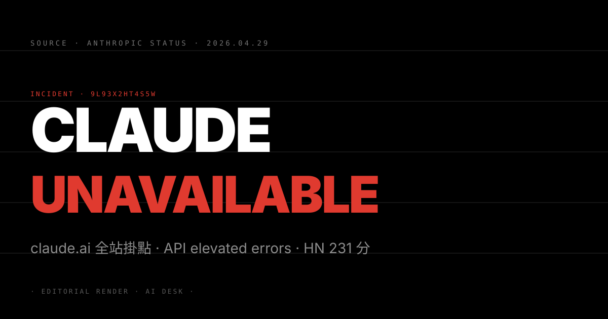
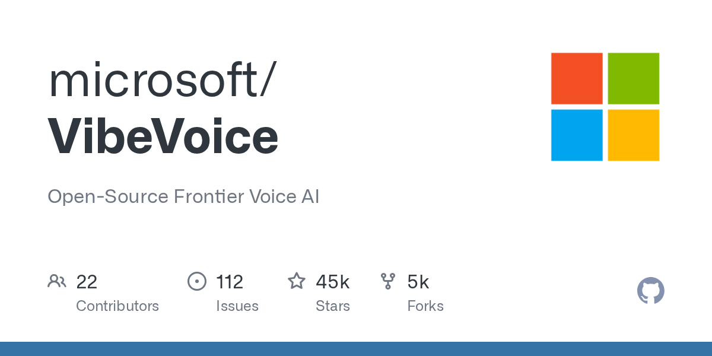

N°20 Claude.ai 全站掛點 · Anthropic API elevated errors 同步爆發

Pin · 不是「某條 API 慢一點」級事件，是 agentic 工作流被當天結算的第一張公開帳單。
發生什麼
Anthropic 官方 status 頁面在台北時間清晨開出 incident 9L93X2HT4S5W：Claude.ai 主站長時間無法登入，Anthropic API 同步出現 elevated error rate。HN 一則討論串「Claude is down」衝上首頁 231 分、評論逾 380 則。Anthropic 在事件發生 30 分鐘內承認影響範圍涵蓋 Claude.ai 介面、Claude Code、所有 API 端點與 enterprise console。
從留言密集度可以看出受影響工作型態：第一波是 coding agent 使用者（Claude Code、Cursor 走 Claude provider 的開發者），第二波是 enterprise customer support 與 RAG pipeline，第三波才是一般對話 UI 使用者。整段事件期間，OpenRouter 與直接走 Anthropic 的 SaaS 都同步斷線——這次不是某一條路有 retry buffer 可以撐。
為什麼重要
第一，agentic workload 把單一供應商風險放大到「即時可感」。傳統 SaaS 斷線使用者頂多看到一個 maintenance page；agentic workload 斷線意味著 CI 流水線中段卡住、客服自動回覆全線停擺、coding agent 在 PR 中半途凍結。這種「對外無聲、對內爆炸」的故障模式，前一波 LLM 應用還沒被迫公開談。
第二，Claude 在 coding agent 賽道的市占同時也是它的單點脆弱性。Cursor、Cline、Cody、Continue 等 IDE agent 預設模型多為 Claude Sonnet 4.x。重度使用者已經把 Claude 當開發環境的一部分，當天 X 與 HN 上的反應從「沒辦法工作」到「這個依賴度已經太深」兩條主軸並行。
我們的判斷
三個看點：
(1) 雙模型備援會在 6 個月內成為 production agent 的預設架構。下一輪 enterprise RFP 會加入「至少兩家 frontier provider failover」這一條。OpenRouter、Together、AWS Bedrock 這類 multi-model gateway 的訂閱會被加速採購。
(2) Anthropic 必須提早交付 SLA 等級服務承諾。當前 Anthropic API 還停留在「best effort」級條款，與 AWS、Azure 的 enterprise SLA 中間有明顯落差。今天這份 incident 報告會在下一輪企業合約被反覆引用。
(3) Anthropic 對 AWS 的依賴會被重新檢視。多數線上推測這次 incident 與底層 AWS 區域故障有間接關聯。Anthropic 是否要把 inference 同步部署到 GCP（呼應 Google 的 $40B 投資）會在下一季財報季被分析師追問。
N°21 Anthropic 拒接五角大廈 · Google 隔天補位簽下擴大合約
Pin · AI 廠商的 Usage Policy 第一次直接決定誰能拿政府大單。
發生什麼
TechCrunch 報導：Anthropic 因內部 Usage Policy 拒絕讓 Claude 系列被用於本土大規模監控與自主致命武器決策後，Google 在 24 小時內與美國國防部簽下擴大合約，把 Gemini 系列 frontier model 與 Vertex AI 平台直接接進國防情報、戰場感知融合與後勤決策系統。合約規模未完整揭露，TechCrunch 引述國防部內部備忘錄指規模在 9 位數中段美元，多年期。
Anthropic 的拒絕並非整體拒接國防部生意——它仍持續供應前沿模型給情報蒐集分析、cyber defense 與紅隊演練等場景。爭議集中在兩條紅線：第一是把模型納入「自主武器決策迴路」（即由 AI 直接核可開火）；第二是把模型用於「美國本土」對特定族裔或政治團體的大規模監控。
為什麼重要
第一，AI 廠商的 safety policy 從成本變武器。過去三年 frontier lab 把 Usage Policy 主要當公關語言；Anthropic 這次的 hard pass 把它變成市場分割線。Google 立刻補位也意味著「願意接的訂單」本身就是商業籌碼，這個賽局現在有了具體的金額。
第二，五角大廈雙下注策略落地。過去 18 個月國防部高層已經多次公開表示「不接受 sole-source AI provider」。今天這份合約等於宣告：Anthropic 是一條備援、Google 是一條主軸；下一個被 onboarded 的會是 OpenAI 或 xAI——只要他們點頭。
我們的判斷
三個看點：
(1) Anthropic 估值短期會被打折，但長期客群篩選明確化。政府客戶營收上限被自己劃下，但金融、醫療、法律、教育等「policy-sensitive」客戶會把 Anthropic 列為首選。這是一場主動的 segment 自選——對 50 人黃金交易精英社群這類客群也是訊號。
(2) Google 的 Gemini 系列商業故事被一次性升級。Vertex AI + Mythos（上週的 cybersecurity 模型）+ 國防部擴大合約，三件事拼起來等於 Google Cloud 在「規模化垂直 AI」線同時握有上中下游。後續財報季 Google 會把這條故事打包賣給市場。
(3) AI Usage Policy 會變成投資人盡調項目。VC 與企業客戶會開始要求 frontier 採購對象提供書面 Usage Policy、紅線清單與例外決策流程文件。原本是工程內部 doc 的東西，會被搬到 master service agreement 的附件。
N°22 微軟 Open-Source VibeVoice · 前沿語音模型直接放上 GitHub

Pin · 微軟把語音生成這條賽道的成本曲線，當天往下打了一個檔位。
發生什麼
微軟在 GitHub 開出 microsoft/VibeVoice：一支 frontier 等級的多語言 voice 模型，主打 long-form podcast 等級的語音生成、跨語者一致性、情感層次控制與多角色對話。授權採用 MIT，權重與訓練腳本同步釋出。HN 衝到 295 分，留言重點集中在「對 ElevenLabs 是不是滅頂事件」與「對配音、podcast、agent voice 的成本影響」兩條主軸。
從技術 spec 看，VibeVoice 在多人對話 turn-taking、語氣承接、情感連貫的指標已逼近 ElevenLabs Multilingual v2 與 OpenAI Advanced Voice 的封閉 API 水準。差距主要在「即時 streaming 延遲」與「品牌語音 fine-tune」這兩條，但這兩條都在開源社群可解的範圍內。
為什麼重要
第一，語音生成第一次有了「足夠好的開源底座」。過去兩年 TTS 賽道一直被「品質好的封閉、開源的 Coqui XTTS 系列卡在中等品質」這個結構卡住。VibeVoice 的釋出讓「開源前沿 voice」這條軸線正式起跑。整個 voice agent、podcast 自動化、有聲書、輔具、客服語音的成本結構會被往下推。
第二，微軟的 AI 戰略再亮一張開源底牌。從 Phi 系列 LLM、到 BitNet 量化、再到 VibeVoice，微軟的 open-source 戰術已經非常清楚：在自己不主控的 frontier 賽道上，用 open-source 把成本拉低、把生態搶走。voice 是繼 LLM 之後第二個被放上這張牌桌的賽道。
我們的判斷
三個看點：
(1) ElevenLabs 的下一輪估值會見壓。不會立刻崩，但 enterprise pricing power 與品牌語音 lock-in 的議價能力會被打折。產品線會被迫往「品牌訂製、合規、即時 streaming」三個方向強化護城河。
(2) Podcast 與有聲書產業的進入成本被砍半。個人創作者用 VibeVoice 跑出 ElevenLabs 等級語音的硬體門檻會降到「一張消費級 GPU + 一週工程」。中小型內容工作室會在 60 天內出現新的工具鏈。
(3) 下一個被開源化的會是 video generation。當 voice 被微軟丟出來，OpenAI Sora、Runway、Pika 這條線會在 12 個月內出現對位的開源 frontier release——很可能來自 Meta 或 ByteDance。
N°23 OpenAI 模型登 AWS Bedrock · Managed Agents 同步上架
Pin · 昨天的合約，今天就上架——Bedrock Managed Agents 是雲端三巨頭洗牌的第二顆釘子。
發生什麼
TechCrunch 與 Stratechery 雙線報導：Amazon 將 OpenAI 模型直接接進 AWS Bedrock 平台，並同步推出 Bedrock Managed Agents。Sam Altman 與 AWS CEO Matt Garman 接受 Stratechery 訪談，主軸是「OpenAI 模型 + AWS 算力 + Bedrock 平台層」三件事打包銷售。HN 衝到 343 分。
對應前一輪事件：微軟與 OpenAI 終止獨家合作（Bloomberg 4/27 首發），OpenAI 同日宣布 $50B AWS 算力大單。原本市場預期 Bedrock 上架 OpenAI 模型至少要等到下一季——AWS 直接在 24 小時內把產品線、計價、Managed Agents 一次推齊，速度本身就是訊號。
為什麼重要
第一，agentic 服務戰場第一次有了三家主供應商。過去 12 個月 Bedrock 的 Agent 故事主要靠 Anthropic Claude 撐起。現在 OpenAI GPT 系列上線、加上既有的 Anthropic 與 Meta Llama，Bedrock 變成第一個同時握有三家 frontier 模型的 managed agent 平台。Azure Foundry 與 Vertex AI 必須在下一季給對位回應。
第二，企業採購邏輯會從「選模型」變成「選 agent 平台」。當底層模型差距收窄，企業的選擇權會上移到「哪家平台的 tool calling、guardrail、observability、policy management 整合最好」。AWS Bedrock 的 Managed Agents 是這條故事第一個有定價、有 SLA、有 enterprise 整合的標準品。
我們的判斷
三個看點：
(1) Anthropic 在 Bedrock 的相對地位被稀釋。原本 AWS 上的 Claude 是 default 選項，現在變成「三選一中的一個」。Anthropic 必須在 Bedrock 平台層給出更深整合（例如 Computer Use 在 Bedrock 內的 first-class 支援）才能維持目前的議價權重。
(2) Azure 必須在 60 天內回應，否則 Foundry 故事會掉隊。微軟的 Azure AI Foundry 過去靠「OpenAI 獨家 + GitHub Copilot 整合」雙腳。獨家解綁後，Foundry 必須加速對 Anthropic 與 Mistral 的整合，並把 Copilot 的 enterprise 故事重新講一次。
(3) 第三方 agent 平台（Vellum、Langfuse、CrewAI、LangGraph Cloud）的窗口收緊。當三家 hyperscaler 都把 Managed Agents 做成 first-party 產品，獨立 agent ops 廠商的差異化必須回到「模型中立 + 跨雲」這條軸線，否則會被吞噬。
· 編輯台 · 明天 07:00 再見 ·